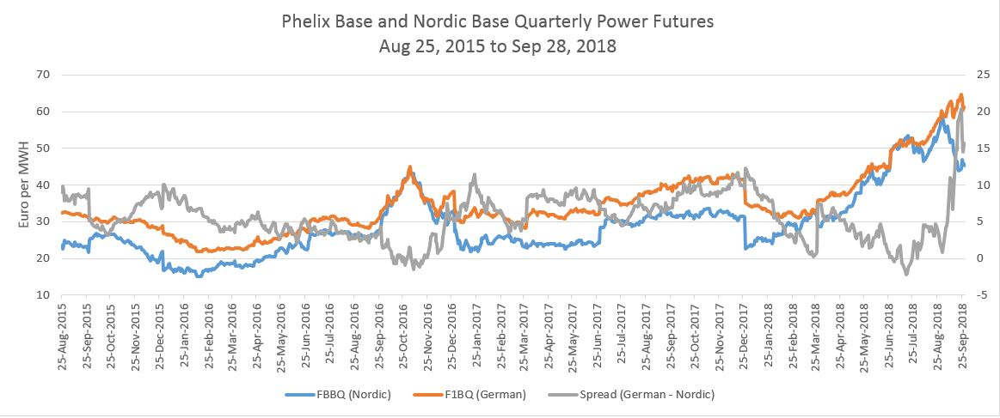
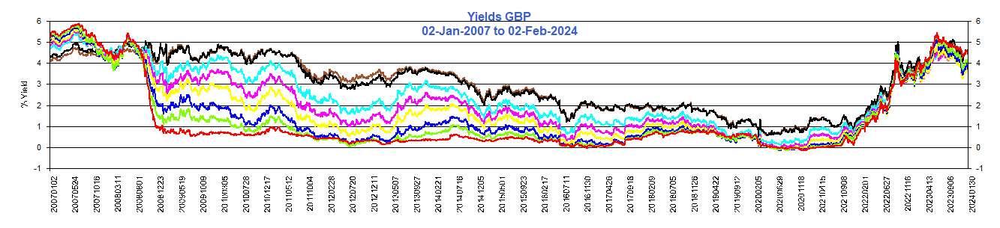

Einer Aas, a private trader and Nasdaq Clearing Member had bet on the German-Nordic spread narrowing. However, German prices spiked on CO2 cost and Nordics fell on rain. On Monday, September 10, 2018 Mr. Aas received an intraday margin call but could not meet the requirement and was declared to be in default Sep 11.
 Waterfall. Within 48 hours of the default, Nasdaq Clearing closed-out the contracts consuming Eur 7M of Nasdaq Junior Capital and Eur107m of clearing members funds (65% of the default fund). Since this is a significant loss to a clearing exchange and as RiskSnap provides HVaR software, we provide a risk analysis of the position using HVaR. Nasdaq Clearing uses a proprietary SPAN® model for their commodity margining.
Waterfall. Within 48 hours of the default, Nasdaq Clearing closed-out the contracts consuming Eur 7M of Nasdaq Junior Capital and Eur107m of clearing members funds (65% of the default fund). Since this is a significant loss to a clearing exchange and as RiskSnap provides HVaR software, we provide a risk analysis of the position using HVaR. Nasdaq Clearing uses a proprietary SPAN® model for their commodity margining.
 Data. It should be noted that for this analysis data from the European Commodities Clearing (ECC) (AG), the clearer for the European Commodities Exchange (EEX) AG, is used since ECC's data appeared to be more easily accessible. An assumption is that similar insights can be obtained. The front quarterly futures contracts of the ECC Nordic and German based power contracts are graphed above covering 3 years. Clearly, there was a widening in the spread during the August - September period. The closing prices on Nordic was 55.95 Sep 7th, and 51.5 Sep 10th; for German power, 61.06 and 62.56 resp. On a contract size of 2209 MWH the variation margin was €-13145
 SPAN®. Both Nasdaq Clearing and ECC use SPAN® for margining power futures. Generally, 2-day parametric VaR is used for SPAN® risk amounts. Nasdaq Clearing uses parametric VaR (variance analysis) and a 2 day holding period (HP)for each contract separately with a correlation offset of 50%. The ECC SPAN® result was €10884., a shortfall of 17%.
SPAN®. Both Nasdaq Clearing and ECC use SPAN® for margining power futures. Generally, 2-day parametric VaR is used for SPAN® risk amounts. Nasdaq Clearing uses parametric VaR (variance analysis) and a 2 day holding period (HP)for each contract separately with a correlation offset of 50%. The ECC SPAN® result was €10884., a shortfall of 17%.
 RiskSnap Historical Simulation. RiskSnap’s calculations are based on a historical simulation of the portfolio, taking into account both HVaR and expected shortfall (the tail of the HVaR calculations) for a stress period defined as the 365 day period over which the largest loss is experienced, and also for the current period which has been arbitrarily set as 90 days. Since historical simulation is used, long positions will have a different risk profile from short positions, unlike SPAN®.
The same 99.2% confidence intervals as Nasdaq’s was used. According to regulatory requirements no weighting is applied to the stress period. For the current period EWMA was used with a lambda weighting of 0.98. RiskSnap takes the worst case of the above 4 scenarios. The result was €11020, similar to the EEC's SPAN® margin.
RiskSnap Historical Simulation. RiskSnap’s calculations are based on a historical simulation of the portfolio, taking into account both HVaR and expected shortfall (the tail of the HVaR calculations) for a stress period defined as the 365 day period over which the largest loss is experienced, and also for the current period which has been arbitrarily set as 90 days. Since historical simulation is used, long positions will have a different risk profile from short positions, unlike SPAN®.
The same 99.2% confidence intervals as Nasdaq’s was used. According to regulatory requirements no weighting is applied to the stress period. For the current period EWMA was used with a lambda weighting of 0.98. RiskSnap takes the worst case of the above 4 scenarios. The result was €11020, similar to the EEC's SPAN® margin.
 Concentration. Although regulatory and legal restrictions prevented Nasdaq from divulging the percentage of the market that the trader held, there was a big impact on variation margin indicating a large position. In addition, a question and answer document by Nasdaq said that the position limit of 14,469,300 MWh was 50% of open interest for category German “other months”, and had been increased July 1st from 35% as at year-end 2017. A 2 day holding period is commonly used for futures due to perceived high liquidity. Some exchanges, however, when faced with concentration risk will increase the number of liquidation days. Using a 4 day HP, for example, would have increased margin to €15580 or enough to cover the variation margin and possibly force a reduction of holdings leading up to the crisis. It is not known what value Nasdaq or ECC uses in these cases.
Concentration. Although regulatory and legal restrictions prevented Nasdaq from divulging the percentage of the market that the trader held, there was a big impact on variation margin indicating a large position. In addition, a question and answer document by Nasdaq said that the position limit of 14,469,300 MWh was 50% of open interest for category German “other months”, and had been increased July 1st from 35% as at year-end 2017. A 2 day holding period is commonly used for futures due to perceived high liquidity. Some exchanges, however, when faced with concentration risk will increase the number of liquidation days. Using a 4 day HP, for example, would have increased margin to €15580 or enough to cover the variation margin and possibly force a reduction of holdings leading up to the crisis. It is not known what value Nasdaq or ECC uses in these cases.
 Frequency of Parameter Update. On Sep 28th, according to RiskSnap’s HVaR model, the stress period had shifted significantly due to the inclusion of current events. The risk was then € 17,690. However, ECC’s SPAN® value had remained unmoved. Nasdaq updates the parameters of the margin methodology on a monthly basis, perhaps ECC has as of Sep 28th not yet updated the parameters. RiskSnap searches for the stress period over the historical period for a portfolio of trades and does not require establishment of scenarios.
Frequency of Parameter Update. On Sep 28th, according to RiskSnap’s HVaR model, the stress period had shifted significantly due to the inclusion of current events. The risk was then € 17,690. However, ECC’s SPAN® value had remained unmoved. Nasdaq updates the parameters of the margin methodology on a monthly basis, perhaps ECC has as of Sep 28th not yet updated the parameters. RiskSnap searches for the stress period over the historical period for a portfolio of trades and does not require establishment of scenarios.
| EUR | 10-Sep-2018 | 28-Sep-2018 |
|---|---|---|
| Variation Margin | -13143.6 | |
| SPAN Margin (ECC) | 10884 | 10407 |
| RiskSnap Margin - 2 day HP | 11020 | 17690 |
| RiskSnap Margin - 4 day HP | 15580 |
CONCLUSION: Regardless of margins specified by exchanges or other authorities it is prudent to run your own risk calculations to prevent blow-outs.
The Auto-Callable Contingent Coupon Barrier Notes Linked to the Lesser Performing of Four Equity Securities (a.k.a. "FANG barrier") was cited in FT Alphaville, July 20 by Dan McCrum with the challenge “Readers better able to price option values might chime in”. As we are interested in risk, we chime in on this interesting product.
 The FANG barrier is a July 1, 2021 note, whose superior coupon payments of 10.2% per annum and principal return are impacted by barriers. If any of the four stocks (Facebook, Amazon, Netflicks, Google) at any of the 12 quarterly coupon payment dates is 50% below their initial price then there is no coupon for that date, plus a loss of principal if the date is the maturity date where the principal returned is based on the return of the lowest returning stock as measured against the initial price. The maximum possible return is the principal plus 12 coupon payments of 2.55% each. The maximum possible loss is loss of all coupon payments plus the entire principal. An automatic call occurs if on any payment date from Dec 27, 2018, each of the stocks are greater than the initial price. RBC issued $1,424,000 of this note June 29, 2019, with net proceeds of $1,391,960.
The FANG barrier is a July 1, 2021 note, whose superior coupon payments of 10.2% per annum and principal return are impacted by barriers. If any of the four stocks (Facebook, Amazon, Netflicks, Google) at any of the 12 quarterly coupon payment dates is 50% below their initial price then there is no coupon for that date, plus a loss of principal if the date is the maturity date where the principal returned is based on the return of the lowest returning stock as measured against the initial price. The maximum possible return is the principal plus 12 coupon payments of 2.55% each. The maximum possible loss is loss of all coupon payments plus the entire principal. An automatic call occurs if on any payment date from Dec 27, 2018, each of the stocks are greater than the initial price. RBC issued $1,424,000 of this note June 29, 2019, with net proceeds of $1,391,960.
 RiskSnap priced the product as worth $1,359,000 July 20th using Monte Carlo. On Sep 7th the value increased to 1,386,000. In the case of barrier options, volatility is a negative factor since there is more likelihood of getting “knocked out”. On the other hand time decay is positive since as maturity approaches, the risk of getting “knocked out” diminishes, which may have contributed to the increase in price. Other risk factors include correlation. As correlation diminishes there is more likelihood that one of the stocks will hit a barrier as they begin to behave independently of each other.
RiskSnap priced the product as worth $1,359,000 July 20th using Monte Carlo. On Sep 7th the value increased to 1,386,000. In the case of barrier options, volatility is a negative factor since there is more likelihood of getting “knocked out”. On the other hand time decay is positive since as maturity approaches, the risk of getting “knocked out” diminishes, which may have contributed to the increase in price. Other risk factors include correlation. As correlation diminishes there is more likelihood that one of the stocks will hit a barrier as they begin to behave independently of each other.
Payments are tracked below.
| AMZN | FB | GOOG | NFLX | Action | |
|---|---|---|---|---|---|
| Initial Price (Strike) | 1660.51 | 195.84 | 1116.94 | 390.39 | |
| Barrier | 830.26 | 97.92 | 558.47 | 105.2 | |
| 27-Sep-2018 | 2012.98 | 168.84 | 1194.64 | 380.71 | 2.55% Coupon Paid |
| % Change | 21.7 | -13.8 | 7 | 2.5 |
 At a 2007 hedge fund conference in Nassau, a Paulson & Co presenter showed an interesting housing chart which has since stuck with me. In 2007, John Paulson became world-famous by shorting the US housing market by betting against mortgage backed credit default swaps. His firm made $14Billion and Mr. Paulson himself made $4Billion on this one trade alone.
At a 2007 hedge fund conference in Nassau, a Paulson & Co presenter showed an interesting housing chart which has since stuck with me. In 2007, John Paulson became world-famous by shorting the US housing market by betting against mortgage backed credit default swaps. His firm made $14Billion and Mr. Paulson himself made $4Billion on this one trade alone.
 Mr. Paulson believed that housing prices were decelerating and Paolo Pellegrini, the analyst who worked with Mr. Paulson, developed a housing price vs wage chart. The chart above is similar and shows the year over year change in the seasonally adjusted housing price index divided by the inflation-adjusted hourly wage growth.. The chart above relates to wages, a more direct approach than yields alone, which illustrates that regardless of cause, housing is becoming less attractive/affordable relative to wage.
Mr. Paulson believed that housing prices were decelerating and Paolo Pellegrini, the analyst who worked with Mr. Paulson, developed a housing price vs wage chart. The chart above is similar and shows the year over year change in the seasonally adjusted housing price index divided by the inflation-adjusted hourly wage growth.. The chart above relates to wages, a more direct approach than yields alone, which illustrates that regardless of cause, housing is becoming less attractive/affordable relative to wage.
Although the housing data is lagged, yields are showing a constant increase.
 US Yields
US Yields
 Canadian Yields
Canadian Yields
 Euro Yields
Euro Yields
 U.K. Yields
Possibly the future is reflected in share price change beginning of this year of the three S&P500 homebuilding companies.
| D.R Horton (DHI) | Lennar Corporation (LEN) | NVR Inc (NVR) | ||
|---|---|---|---|---|
| 02-Jan-2018 | 50.621 | 64.71 | 3259.61 | |
| 28-Sep-2018 | 42.18 | 46.69 | 2470.80 | |
| % Change | -16.7 | -27.8 | -30.0 |
Value at Risk (VaR) is one of the most popular tools used in risk management and is incorporated within the Basel Accord for banking supervision. VaR is used by central counterparties (CCPs) for purposes of determining initial margin. VaR and Expected Shortfall (ES) are standard measures used by traders for setting risk limits and can be used by investors, traders and risk managers both for preventing panic selling (or buying) in periods of high volatility, and also preventing overreaching in periods of low volatility.
Our core solution is VaR.
A click on the chart icons below for various assets and sectors, will provide a graph where the one in one hundred chance (99th percentile) breach is visible below the Current VaR red line .